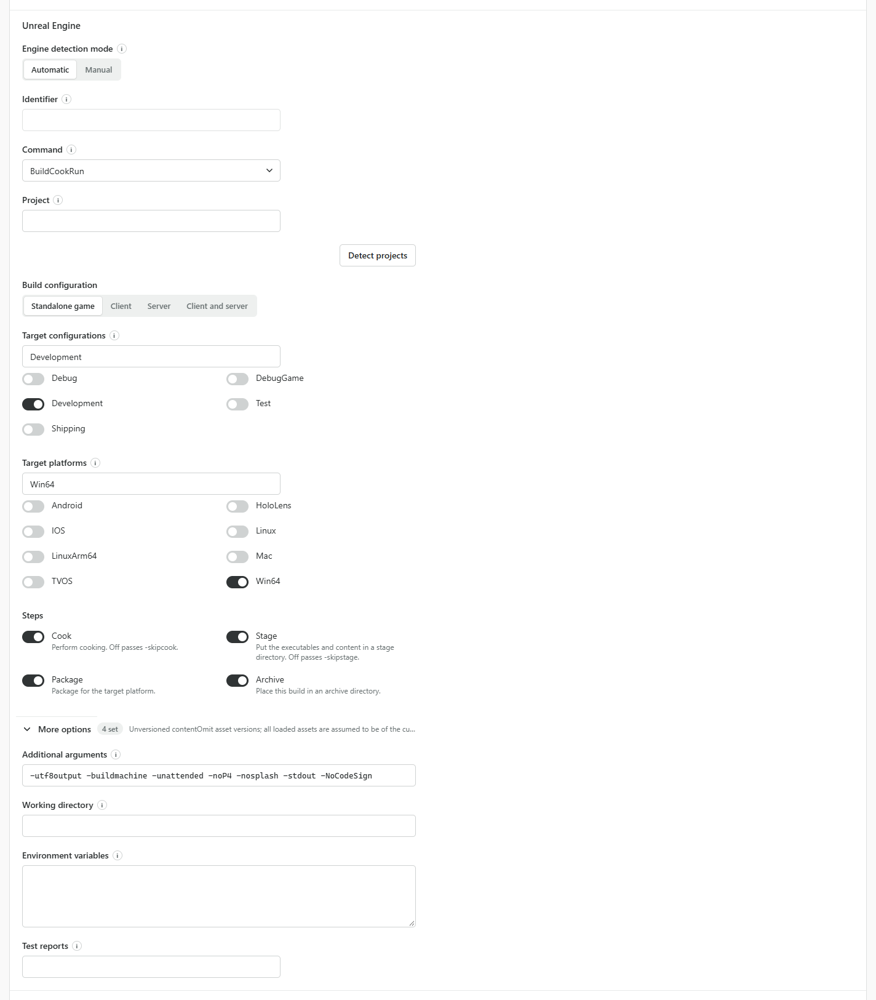

Unreal Engine step
Compile, cook, package and test an Unreal Engine game: BuildCookRun, BuildGraph on one machine or many, automation tests, commandlets and custom automation commands.
When to use it
Use it when your game is an Unreal Engine project. One step type covers the five jobs a build machine does: make a packaged game, run a build graph script, run automation tests, run a commandlet (a small program the editor runs, such as a content check), and run any other automation command. The step finds the engine on the agent, runs the Unreal tools without windows or prompts, and picks errors and warnings out of the engine log.
How to set it up
- Open the build configuration and go to Settings › Build steps.
- Click Add build step, type
Unrealin Filter step types and click the Unreal Engine tile. - Give the step a name, for example
Build, cook and package. - Choose the Engine detection mode. In Automatic, type the engine version in Identifier. In Manual, type the engine folder in Root dir.
- Choose the Command. The fields below it change with your choice.
- Fill in the fields for that command (see the tables below).
- Click Save.

Settings every step has (step name, working directory, environment variables, when the step runs) are on Runners.
Every field
Engine (all commands)
| Field | What it does | Default | Example |
|---|---|---|---|
| Engine detection mode | Automatic picks an engine the agent found. Manual uses a folder you name. | Automatic | Automatic |
| Identifier | Automatic mode. A version such as 5.2 or 5.3.4 for engines installed from the Epic launcher, or the custom name of a source build. The step runs only on agents that report a matching engine. If several match, the latest one is used. | Empty | 5.4 |
| Root dir | Manual mode. The Unreal Engine root folder, relative to the workspace or absolute. | Empty | D:\UE\UE_5.4 |
| Command | What the step runs: BuildCookRun, BuildGraph, Automation tests, Custom automation command or Commandlet. | BuildCookRun | BuildCookRun |
| Additional arguments | Added after the command. The default makes the build tools and the editor run unattended on a build machine. The step also sets UE_LOG_JSON_TO_STDOUT=1 so errors and warnings are found in the log. | -utf8output -buildmachine -unattended -noP4 -nosplash -stdout -NoCodeSign | Add -clean |
Command: BuildCookRun
Builds the game, cooks the content (turns assets into the format of the platform), stages the files, packages and archives.
| Field | What it does | Default | Example |
|---|---|---|---|
| Project | Path to the .uproject file, relative to the workspace or absolute. The button Detect projects lists the .uproject files in the top folder of the last workspace and in the folders a .uprojectdirs file lists. | Empty (required) | Skyforge.uproject |
| Build configuration | What kind of build: Standalone game, Client, Server or Client and server. It decides which target fields are shown. | Standalone game | Client and server |
| Target configurations | Standalone. Debug, DebugGame, Development, Test or Shipping, joined with +. Tick the boxes or type them. | Development | Development+Shipping |
| Target platforms | Standalone. Platform names joined with +: Android, HoloLens, IOS, Linux, LinuxArm64, Mac, TVOS, Win64. Names not on the list are accepted. | Win64 | Win64+Linux |
| Client target configurations, Client target platforms | Same, for the client. Shown for Client, and Client and server. | Development, Win64 | Shipping, Win64 |
| Server target configurations, Server target platforms | Same, for the server. Shown for Server, and Client and server. | Development, Linux | Development, Linux |
| Steps | Four switches. Cook: perform cooking (off passes -skipcook). Stage: put the executables and content in a stage directory (off passes -skipstage). Package: package for the target platform. Archive: place the build in an archive directory. | All on | All on |
Under Advanced:
| Field | What it does | Default | Example |
|---|---|---|---|
| Target | Name the build target when the project has several of one type. Join several with +. | Empty | SkyforgeGame |
| Maps to cook | Map names joined with +. Empty uses the maps of the project settings. | Empty | Forest_Main+Hub |
| Cook cultures | Cultures joined with +. Empty uses CulturesToStage of the project. | Empty | en-US+de-DE |
| Unversioned content | Leave out asset versions. All loaded assets are assumed to be of the current version. | On | On |
| Staging directory | Where files are staged. Empty uses Saved/StagedBuilds. | Empty | Stage |
| Pak | Put all assets into one .pak file. | On | On |
| Compressed | Smaller deployment, possibly slower to load. | On | On |
| Prerequisites | Include an installer for the prerequisites of the packaged game, where the platform has one. | On | On |
| Archive directory | Where the archive goes. Used when Archive is on. | Empty | Output |
Command: BuildGraph
BuildGraph is Unreal's script format for build pipelines: a graph of nodes, grouped by the machine type that runs them.
| Field | What it does | Default | Example |
|---|---|---|---|
| Script path | The script that describes the build graph. | Empty (required) | Engine/Build/Graph/Examples/BuildEditorAndTools.xml |
| Target | The name of the node or output tag to build. | Empty (required) | Make Installed Build Win64 |
| Options | One OPTION_NAME=OPTION_VALUE per line. Each becomes -set:NAME=VALUE for the script. You can use ${WORKSPACE} in a value. | Empty | BuildPlatforms=Win64 |
| Mode | Single machine runs every node one after the other on this agent. Distributed gives each agent group of the script its own build, run as a build chain on several agents. | Single machine | Distributed |
| Shared storage | Distributed only. A folder every agent can reach, for example a network share. Empty reads UNREAL_BUILDGRAPH_SHARED_DIR on each agent. A folder named after this build is made inside it. | Empty | \\fileserver\buildgraph |
| Post badges | Distributed only. Posts the badges defined in the graph to a UGS metadata server as their nodes run. | Off | On |
| Metadata server | Distributed only. Needed when Post badges is on. | Empty | http://ugs.studio.example:3000 |
| Credentials | Distributed only. Optional. A Secret text credential sent as a bearer token. UGS metadata servers usually run in a closed network and need none. | None | ugs-token |
| Button Test metadata server | Connects to the server and says which API version it uses. | - | - |
Distributed BuildGraph
- The step first exports the graph and reads its agent groups.
- It creates one build per agent group, in the order the groups depend on each other, and starts them as a build chain. Each group build runs its nodes with
-SingleNode, and writes to the shared storage folder. - The agent for a group is chosen by the group's agent types. An agent offers its types in the environment variable
UNREAL_BUILDGRAPH_AGENT_TYPE, separated by;. The shared folder can be set on the agent withUNREAL_BUILDGRAPH_SHARED_DIR. - When all groups finish, the files they archived are added to the artifacts of this build. If a group did not succeed, the step fails and names the groups. A group whose dependency failed is skipped.
A distributed BuildGraph step must be the only step of its build configuration. The source must already be checked out, so connect a version control root. The group builds check out the same revision this build used.
Command: Automation tests
Runs the editor with the Unreal automation test system.
| Field | What it does | Default | Example |
|---|---|---|---|
| Project | Path to the .uproject file. | Empty (required) | Skyforge.uproject |
| Exec command | Adds -ExecCmds=Automation with the chosen mode: Run all, Run filter or Run tests. | Run all | Run filter |
| Filter | For Run filter. Runs only the tests tagged with this filter: Engine, Smoke, Stress, Perf or Product. | Product | Smoke |
| Tests | For Run tests. One test name per line. Full or partial hierarchical names, joined with +. | Empty | Project.Skyforge.Inventory |
| Run without rendering (nullRHI) | Disable rendering. Passes -nullrhi. | On | On |
The test lines of the engine log are turned into test results, so each test shows as passed, failed or skipped.
Command: Custom automation command
| Field | What it does | Default | Example |
|---|---|---|---|
| Name | The automation command to run with RunUAT. | Empty (required) | BuildPlugin |
| Arguments | Arguments passed to the command. | Empty | -Plugin=D:\Skyforge\Plugins\Fog\Fog.uplugin -Package=D:\Out |
Command: Commandlet
| Field | What it does | Default | Example |
|---|---|---|---|
| Editor | Empty uses the default editor. A binary name uses the default folder. A relative path starts at the engine root. An absolute path is used as it is. | Empty | UnrealEditor-Cmd.exe |
| Project | A path to the project, or its name for a native project. Empty runs without a project. | Empty | Skyforge.uproject |
| Commandlet | The name used after -run=. | Empty (required) | ResavePackages |
| Arguments | Arguments passed to the commandlet. | Empty | -AutoCheckout -IgnoreChangelist |
How the engine is found
When an agent connects, it looks for engines in the Epic launcher list, the engine list files, and (on Windows) the registry, where source builds are recorded. Open Agents, open an agent and click Unreal Engines. The Detected engines table shows the Kind (Launcher or Source build), Identifier, Version, Path and Found in of each engine. Click Detect again after you install an engine.
A step with an Identifier only runs on an agent that has an engine whose identifier starts with it. Otherwise the build waits in the queue, and the wait reason names each agent and why it cannot take the build.
The same tab has a card for BuildGraph with the two settings agents use for distributed graphs: UNREAL_BUILDGRAPH_AGENT_TYPE and UNREAL_BUILDGRAPH_SHARED_DIR. Set them as environment variables on the agent (Configure › Node Properties).

The step starts RunUAT for BuildCookRun, BuildGraph and custom automation commands, and the editor for automation tests and commandlets.
A worked example
Skyforge is built with Unreal Engine 5.4 on Windows agents. The nightly build runs BuildCookRun, then an Automation tests step.
| Step 1 field | Value |
|---|---|
| Step name | Build, cook and package |
| Engine detection mode / Identifier | Automatic / 5.4 |
| Command | BuildCookRun |
| Project | Skyforge.uproject |
| Target configurations / platforms | Development / Win64 |
| Steps | Cook, Stage, Package and Archive on |
| Archive directory | Output |
Step 2 uses Command Automation tests, Project Skyforge.uproject, Exec command Run filter and Filter Smoke.
What you see when it runs
- The log says Engine 5.4 located at ... was chosen for the build. If several engines match, it also says the latest one was used.
- Engine log lines are shown as plain messages. Lines with level Error or Critical are marked as errors, and Warning lines as warnings. Output on the error stream is shown as a warning.
- If the engine ends with exit code 0 but the log had error lines, the step fails: The Unreal Engine log has N error lines, so the step failed even though the process ended normally.
- For automation tests and BuildGraph on one machine, the build gets test results when the step ends.
- For a distributed graph, the build page shows the build chain with one build per agent group, and the log lists each group and its result.
Problems and fixes
| Problem | What to do |
|---|---|
| The build waits: has no Unreal Engine that matches '5.4'. | Open the agent's Unreal Engines tab and click Detect again, or change the Identifier. If the agent has not reported yet, it is asked again. |
| The agent has no Unreal Engine that matches the identifier. | The same cause when the build already runs. Install the engine or use Manual mode. |
| The engine root folder is not set or The engine identifier cannot be empty. | Fill in Root dir (Manual) or Identifier (Automatic). |
| Could not find the specified project file. | The Project path is relative to the workspace. Include sub-folders. Use Detect projects after a first run. |
| No .uproject file was found on Detect projects. | The workspace has none in its top folder. Type the path by hand. |
| The build configuration has no workspace yet. | Run the build once, then click Detect projects again. |
| A distributed BuildGraph step must be the only step. | Move other work into another build configuration. |
| The shared storage folder is not set. | Fill in Shared storage or set UNREAL_BUILDGRAPH_SHARED_DIR on the agent. |
| The metadata server URL must not be empty. | Fill in Metadata server, or turn Post badges off. |
| Check out the source before the unreal step. | A distributed graph needs a version control root on the build configuration. |